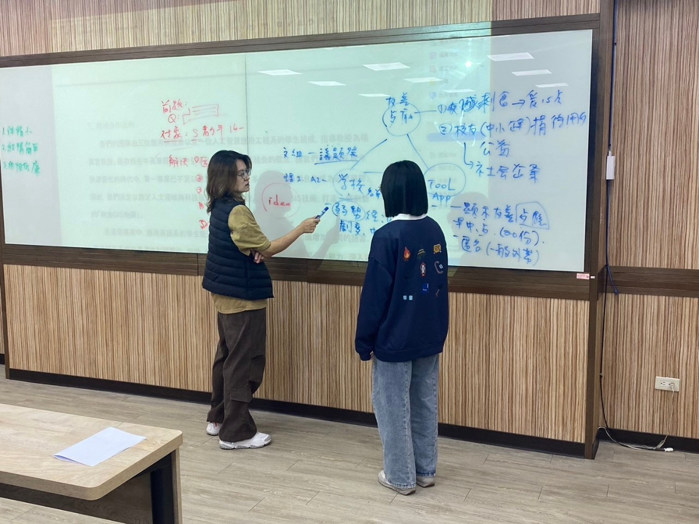

Work Experiences

工作經歷 Work Experiences
國立彰化師範大學科學教育研究所 | 博士後研究員
2022 - 2022
Postdoctoral Researcher, Graduate Institute of Science Education, National Changhua University of Education, Changhua, Taiwan.
- 教育部國民及學前教育署「第2期中小學科學教育中程計畫規劃」
-
國立清華大學區域創新中心 | 博士後研究員
2021 - 2021
Postdoctoral Researcher, Regional Innovation Center, National Tsing Hua University, Hsinchu, Taiwan.
- 科技部人文創新與社會實踐計畫
-
- 新竹智慧城鄉創生計畫：地方活力與能力建構
- 計畫編號：MOST 108-2420-H-007-010-HS1
國立高雄科技大學外語教育中心 | 助理教授
2019 - 2021
Assistant Professor, Foreign Language Enducation Center, National Kaohsiung University of Technology, Kaohsiung, Taiwan.
- 授課課程：大學部英文
-
國立中山大學社會實踐與發展研究中心 | 博士後研究員
2018 - 2020
Postdoctoral Researcher, Social Engagement Center, National Sun Yat-sen University, Kaohsiung, Taiwan.
- 科技部人文創新與社會實踐計畫
-
- 灣岸創生：高雄過渡社區的記憶再現與創新轉型
- 計畫編號：MOST 107-2420-H-110-004-HS1
國立新竹教育大學英語教學系 | 講師
2011 - 2013
Lecturer, Department of English Instruction, National Hsinchu University of Education, Hsinchu, Taiwan.
- Reading and Writing in English
- English Proficiency Development
- Speech and Communication in English
- Grammar and Writing in English
- Listening and Speaking in English
教學經歷 Teaching Experiences
國立清華大學語言學研究所 | 教學助理
2010 - 2012, 2015 - 2017
- Pragmatics
- Sociolinguistics
- Grammaticalization & Lexicalization
- Seminar in Pragmatics
- Discourse Analysis
- Seminar in Pragmatics
國立清華大學人文社會學院 | 教學助理
2012
- Introduction to Linguistics
國立清華大學外國語言文學研究所 | 教學助理
2010
- Contrastive Analysis and Error Analysis
國立清華大學外國語言文學系 | 教學助理
2010
- Syntax
靜宜大學英國語文學系 | 教學助理
2007 - 2008
- Linguistics
靜宜大學(大學部) | 教學助理
2007 - 2008
- English listening and speaking (Undergraduate)